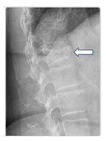
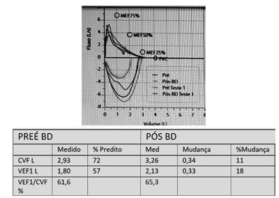
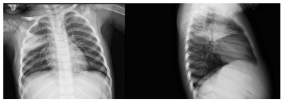
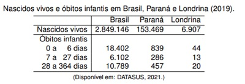
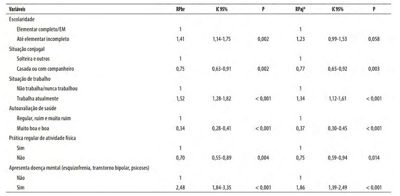
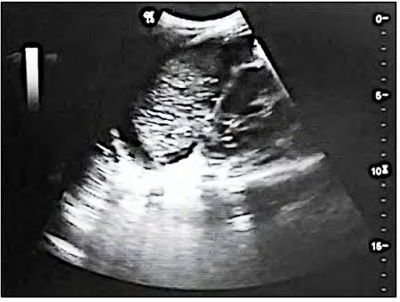

Diagnóstico O Brasil está entre os 30 países de alta carga para TB, considerados prioritários pela Organização Mundial de Saúde para o controle da doença no mundo. Nos últimos anos, foram diagnosticados, em média, 70 mil casos novos da doença. As formas extrapulmonares representam, muitas vezes, um grande desafio diagnóstico e terapêutico. Sobre a tuberculose extrapulmonar, considere as afirmativas a seguir. I. A tuberculose de coluna (Mal de Pott) é responsável por até 50% dos casos de tuberculose óssea, sendo a coluna torácica baixa e lombar os locais mais comumente acometidos. O tratamento pode ser feito com antituberculostáticos por 12 meses. II. A tuberculose pericárdica tem apresentação subaguda ou crônica. Os sintomas mais comuns são dor torácica, tosse seca, dispneia e, raramente, evolui para tamponamento cardíaco. O tratamento de escolha é feito com antituberculostáticos por, pelo menos, 6 meses. III. A meningite tuberculosa tem, geralmente, apresentação clínica subaguda ou crônica. A análise do líquor apresenta pleocitose com predomínio linfomononuclear com hipoglicorraquia e pesquisa de BAAR (bacilos álcool-ácido resistentes) em líquor frequentemente positiva. O tratamento é realizado com antituberculostáticos associados a corticoides por 9 a 12 meses. IV. O diagnóstico de tuberculose pleural é, costumeiramente, realizado pela análise do líquido pleural, que tem características clássicas de exsudato com predomínio de polimorfonucleares e níveis elevados de adenosina deaminase (ADA). O tratamento de escolha é feito com antituberculostáticos por 6 meses. Assinale a alternativa correta.
Em relação às alterações laboratoriais encontradas no paciente com cirrose hepática, considere as afirmativas a seguir. I. A hipergamaglobulinemia ocorre pela presença de shunts portossistêmicos. II. Para o diagnóstico na etiologia alcoólica, é necessário que a aspartato aminotransferase esteja elevada, no mínimo, em duas vezes o limite superior da normalidade. III. Hipernatremia é um achado comum no cirrótico descompensado com ascite. IV. A trombocitopenia resulta, dentre vários fatores, da diminuição da síntese hepática de trombopoetina. Assinale a alternativa correta.
A síndrome de Guillain-Barré é uma neuropatia imunomediada e considerada a causa mais comum de tetraparesia ácida arre exa aguda. Para um paciente com suspeita de síndrome de Guillain-Barré, assinale a alternativa que apresenta, corretamente, os achados considerados um sinal de alerta (
Jovem, 14 anos de idade, vai à consulta, acompanhado dos pais, por apresentar movimentos anormais do tipo “careta” e emissão de vocalizações, incluindo palavras constrangedoras, sem conseguir se controlar. Quando ca angustiado, os sintomas pioram e essa situação faz com que evite o convívio social. O quadro iniciou-se aos 7 anos de idade. Existem antecedentes familiares de doenças mentais. Assinale a alternativa que apresenta, corretamente, o nome da doença diagnosticada.
Revisar: possível letra faltando em enunciado
Mulher, 63 anos de idade, branca, tabagista, é atendida na Unidade Básica de Saúde, com queixa de dor em região dorsal, há 2 semanas. Relata que a dor iniciou de forma súbita e intensa quando levantou seu neto de 3 anos de idade do chão. Ao exame físico, apresenta dor à palpação de coluna toracolombar e piora da dor ao tentar etir a coluna. Nega ter comorbidades ou usar medicamentos de uso contínuo. A radiogra a de coluna em per l é mostrada a seguir. A seta indica a alteração radiológica relacionada ao caso. Além de prescrever analgesia, assinale a alternativa que apresenta, corretamente, a conduta para o caso em questão.

A dermatite de contato é uma das dermatoses mais comuns na prática diária do médico generalista. Tem alta frequência, podendo estar ou não relacionada ao trabalho. Sobre a dermatite de contato, considere as afirmativas a seguir. I. A dermatite de contato fotoalérgica corresponde à reação imunológica do tipo II. II. A dermatite alérgica de contato corresponde à reação imunológica do tipo IV. III. A manifestação clínica mais comum é o eczema em sua fase aguda, subaguda ou crônica. IV. Os testes de contato (epicutâneos) são utilizados para confirmar e investigar a etiologia da dermatite de contato alérgica. Assinale a alternativa correta.
O médico é chamado para atender um paciente em parada cardiorrespiratória com diagnóstico de Covid-19 em intubação orotraqueal, ventilação mecânica e decúbito prono. Com base nesse caso e segundo as recomendações atuais da Sociedade Brasileira de Cardiologia, assinale a alternativa correta.
Paciente internado com suspeita clínica de insu ciência cardíaca. Realizada ecocardiogra a que evidenciou fração de ejeção de 62%, hipertro a concêntrica do ventrículo esquerdo e disfunção diastólica. Após análise detalhada do caso clínico e das medidas ecocardiográ cas, o paciente foi classificado com probabilidade intermediária para diagnóstico de insuficiência cardíaca com fração de ejeção preservada (ICFEp). Com base nesse caso e segundo a Atualização de Tópicos Emergentes da Diretriz Brasileira de Insu ciência Cardíaca – 2021, assinale a alternativa correta.
Revisar: possível letra faltando em enunciado
Assinale a alternativa que apresenta, corretamente, o escore que deve ser utilizado, como preferência para estratificação de risco e auxílio na decisão de alta precoce, em paciente com síndrome coronariana suspeita, segundo as Diretrizes Brasileira de Angina Instável e Infarto Agudo do Miocárdio sem Supra de ST, publicadas em 2021.
Em relação ao risco de suicídio e à avaliação do paciente com risco suicida, considere as afirmativas a seguir. I. Mulheres cometem quatro vezes mais suicídios que homens. II. O método empregado ou planejado na tentativa de suicídio é irrelevante na avaliação, já que toda tentativa de suicídio deve ser levada a sério. III. Tentativa prévia de suicídio é o principal fator de risco para suicídio consumado no futuro. IV. Mesmo diante de recusa de um paciente, com alto risco de suicídio, em aceitar tratamento, a internação psiquiátrica deve ser considerada e discutida com o paciente e os familiares. Assinale a alternativa correta.
Mulher, 43 anos de idade, moradora de rua, com uso abusivo de álcool há muitos anos, foi trazida pelo serviço de urgência após ser encontrada desacordada. À admissão, apresentava-se estável hemodinamicamente, FC: 110 bpm, FR: 27 irpm, PA: 108/75 mmHg, Sat O₂ 99%, com oxigênio suplementar via máscara de venturi a 31%. Exames laboratoriais: Hemoglobina: 10,0 g/dL, Leucócitos totais: 6.000 sem desvio à esquerda, Plaquetas: 270.000 mm³, Cr: 1,17 mg/dL, U: 40 mg/dL, Na: 137 mEq/L, K: 3,3 mEq/L, Cℓ: 101,5 mEq/L, Ca iônico: 1,05 mmol/L , albumina: 2,5 g/dL, glicemia 92 mg/dL, lactato arterial: 2,3 mmol/L, Osmolaridade sérica medida: 350 mOsm/L, Gasometria arterial: pH: 7,18, pCO2: 28 mmHg, HCO -12, Sat O₂: 99%. A partir desse caso clínico, assinale a alternativa correta.
Paciente, sexo masculino, 16 anos de idade, procura médico por atraso no desenvolvimento de caracteres sexuais secundários. Durante o exame físico, foi constatado proporções eunucoides, testículos diminuídos, pili cação pubiana em estágio 2 de Tanner e anosmia. Com base nesses achados, assinale a alternativa que apresenta, corretamente, a hipótese diagnóstica mais provável.
Em 2020, o mundo sofreu com a pandemia da Covid-19. Essa infecção está associada à ocorrência da Síndrome do Desconforto Respiratório Agudo (SDRA). A síndrome, em questão, recebeu novos critérios diagnósticos e classificação, em 2012, na publicação conhecida como a Definição de Berlim. Assinale a alternativa que descreve, corretamente, os critérios diagnósticos SDRA adotados pela Definição de Berlim.
A gestação é um evento biológico normal, contudo, durante este período, o corpo da mulher sofre alterações que podem interferir com o seu atendimento no ambiente de terapia intensiva. Assinale a alternativa que apresenta, corretamente, as principais alterações hemodinâmicas durante a gestação.
Homem, 65 anos de idade, comparece para consulta com queixa de dispneia e tosse crônica, há mais de 3 anos, com piora nos últimos meses. Quando caminha, precisa parar diversas vezes, mesmo no plano, e refere piora dos sintomas no m do dia e ao acordar. Tabagista desde os 20 anos de idade, cerca de 1 maço ao dia. Já teve pneumonias no passado, sem outras doenças conhecidas. Há cerca de 60 dias, foi ao pronto-socorro por piora dos sintomas, foi medicado e liberado, mas não sabe os nomes das medicações. Ao exame físico, ausculta pulmonar reduzida globalmente, mas sem ruídos adventícios. Sem outras alterações. Traz o exame a seguir. Sobre o caso descrito, assinale a alternativa correta.

Em relação à atresia de esôfago (AE), assinale a alternativa correta.
As vacinas são uma das tecnologias mais efetivas e de menor custo-benefício em saúde, sendo o Programa Nacional de Imunizações (PNI) do Brasil uma política pública eficiente, reconhecida nacional e internacionalmente. Em relação às vacinas, atribua V (verdadeiro) ou F (falso) às afirmativas a seguir. ( ) Nas vacinas conjugadas, os antígenos bacterianos são ligados a carreadores proteicos, fazendo com que tais vacinas possam ser aplicadas em crianças de baixa idade e gerem imunidade de longa duração. ( ) Adjuvantes são substâncias presentes nas vacinas com o objetivo de potencializar a resposta imunológica ao antígeno. ( ) A síndrome hipotônico-hiporresponsiva, após vacina DTP celular, com resolução espontânea nas primeiras 48 horas após a aplicação de uma vacina, é considerada um evento adverso não grave e não contraindica doses subsequentes. ( ) Pacientes esplenectomizados devem receber vacinas contra bactérias capsuladas. ( ) Caso a vacina provoque reação ana lática, é possível o uso de doses subsequentes da mesma vacina desde que a aplicação seja feita sob supervisão médica. Assinale a alternativa que contém, de cima para baixo, a sequência correta.
Em relação à doença de Kawasaki, considere as afirmativas a seguir. I. Associados à febre, são critérios diagnósticos: alterações de lábios e cavidade oral, hiperemia conjuntival, alteração de extremidades, exantema polimorfo e linfadenopatia cervical. II. No período febril, há indicação de ácido acetilsalicílico (AAS), em baixas doses, para inibir agregação plaquetária. III. A indicação de imunoglobulina humana endovenosa se restringe aos casos em que houver comprometimento cardíaco. IV. Os exames séricos da fase aguda demonstram leucocitose com neutrofilia e aumento das provas inflamatória. Assinale a alternativa correta.
Paciente, 3 anos de idade, com história de constipação intestinal há 6 meses, caracterizada por cruzar as pernas ou andar na ponta dos pés quando tinha desejo evacuatório. Evacua de 1 a 2 vezes na semana, fezes de grosso calibre, porém, diariamente, apresenta perda involuntária de conteúdo fecal amolecido em roupa íntima. Mãe refere que utiliza esporadicamente supositório de glicerina para alívio do quadro. Há 2 meses, buscou atendimento nutricional que adequou ingesta de bras, mas sem melhora clínica. Não faz uso de qualquer medicação de uso contínuo. Ao exame físico, peso e estatura próximo ao Z score 0. Presença de fezes palpáveis em fossa ilíaca esquerda. Ânus sem lesões à inspeção. Sobre o caso descrito, considere as afirmativas a seguir. I. Inicialmente, deve-se realizar desimpactação com óleo mineral 1 mL/kg/dia por 3 dias consecutivos. II. Probióticos como o Saccharomyces boulardii devem ser utilizados antes do tratamento com laxantes, pois reduzem o tempo de uso dessas medicações. III. Os laxantes osmóticos são as medicações de escolha para o tratamento de manutenção. IV. Como o paciente já consome quantidades adequadas de bra alimentar, não há necessidade de suplementação desse nutriente. Assinale a alternativa correta.
Lactente, 3 meses de vida, vem à consulta devido a regurgitações frequentes. O acompanhante refere que apresenta golfadas em pequenas quantidades desde as primeiras semanas de vida, porém, há 4 semanas, houve um aumento do volume e da frequência das regurgitações. Associou a piora clínica ao desmame e início de fórmula infantil, devido à internação materna. Há 15 dias, em uso de fórmula antirregurgitação (AR), mantendo padrão de mais de 10 episódios ao dia. No último mês, lactente teve ganho de peso de 230 g. Nega febre no período, nega uso de medicações (exceto vitamina D) e nega queixas urinárias. Ao exame físico, paciente com peso no Z score -1, exame abdominal sem alterações, exame neurológico sem alterações. Sobre o quadro descrito, assinale a alternativa que apresenta a conduta inicial correta.
Há fatores genéticos envolvidos na gênese da obesidade infantil. No hipotálamo, há vias de sinalização orexígenas e anorexígenas. Em relação à regulação central do apetite, assinale a alternativa correta.
A mãe de um menino, 8 anos de idade, refere que, desde os 2 anos, a criança é menor do que as outras da mesma idade. RNT, AIG, parto normal, IG: 39 semanas, peso ao nascimento: 3200 g e comprimento de 49 cm. Aleitamento materno até 1 ano de vida, sempre foi hígido, sem internações prévias, sem atopias. Estatura do pai: 1,78 m e da mãe: 1,65 m. Pais não consanguíneos, sem casos semelhantes na família. Ao exame, peso: 18 kg e estatura: 1,15 m ambos abaixo do percentil 3. Tireoide normal, impúbere e sem dismorfias. Em relação à melhor conduta para esse caso, assinale a alternativa correta.
Recém-nascido a termo, lho de mãe diabética, pélvico, líquido amniótico meconial, nasceu de cesárea, apgar 9-10, peso = 3900 g, iniciou com taquipneia (FR = 70) desde o nascimento, sem necessidade de oxigenioterapia, mantendo saturação 95%. Hemoglucoteste = 47 mg/dL na primeira hora de vida. Raios X de tórax normais. Em relação ao diagnóstico mais provável, assinale a alternativa correta.
Técnicas de amamentação Uma puérpera, 30 anos de idade, está ansiosa por não conseguir amamentar plenamente seu primeiro lho, atualmente, com 3 dias de vida. Relata que ele chora muito, larga o peito frequentemente e que não sente a mama esvaziar após a mamada. Ela deseja ter alta, mas sente-se insegura com a perda ponderal de seu filho, de 12% desde o nascimento. Na observação da mamada, o médico repara que as mamas estão cheias, com aréola tensa, que as bochechas do bebê cam encovadas e a mãe sente muita dor. Assinale a alternativa que apresenta, corretamente, a orientação mais indicada para essa nutriz.
Em relação às alterações que ocorrem no coração e na circulação fetal após o nascimento, atribua V (verdadeiro) ou F (falso) às afirmativas a seguir. ( ) A CIA tipo ostium primum é considerada uma alteração fisiológica, nas primeiras 24 horas de vida. ( ) A hipertensão pulmonar, nas primeiras 12 horas de vida, é um evento bastante raro, restringindo-se aos casos de malformações pulmonares/torácicas graves. ( ) Após o nascimento, ocorre aumento da pressão no átrio esquerdo, o que leva ao fechamento progressivo do forame oval. ( ) A comunicação interventricular pode ser considerada siológica, nos primeiros dias de vida, dependendo do seu diâmetro. ( ) O ducto arterioso é uma estrutura essencial na vida fetal, porém sua persistência, após o nascimento, pode ser prejudicial. Assinale a alternativa que contém, de cima para baixo, a sequência correta.
Paciente do sexo masculino, 3 anos de idade, dá entrada em pronto-socorro com história de palidez e icterícia. Mãe refere que criança apresentou quadro febril, tendo dado paracetamol para controle de temperatura. Refere que algum tempo após, começou a car mais pálido, com olhos amarelados e urina escurecida. Criança com história prévia de ter apresentando os mesmos sintomas de quando apresentou uma infecção de garganta, que necessitou de uso de sulfametoxazol + trimetropim para tratamento. Ao exame físico, apresenta-se ictérico, com fígado palpável a 3 cm rebordo costal direito e baço a 4 cm rebordo costal esquerdo. Exames complementares com presença de anemia, bilirrubinas aumentadas à custa de bilirrubina indireta, reticulocitose, coombs direto negativo e presença de “ Quanto ao diagnóstico mais provável, para esse caso, assinale a alternativa correta.
Um lactente do sexo masculino, 3 meses de vida, comparece para consulta de rotina, sem queixas. Na anamnese, tem-se a informação de que foi um recém-nascido a termo com peso de nascimento de 2,4 kg, está em aleitamento materno exclusivo e em uso de 400 UI de vitamina D. No exame físico, seu estado nutricional é de eutrofia e o desenvolvimento está adequado. Considerando a situação apresentada e a conduta do médico para o caso, assinale a alternativa correta.
Nos primeiros dias, o leite materno, chamado de colostro, possui características próprias e adequadas ao recém-nascido a termo. Assinale a alternativa que apresenta, corretamente, suas características.
Paciente sexo feminino, 10 meses de vida, busca atendimento em pronto-socorro devido à di culdade respiratória notada pela mãe através do “afundamento das costelas”. Apresenta tosse úmida, rinorreia hialina, há 5 dias, e, há 1 dia, evoluiu com febre de 39,1 apresenta-se em bom estado geral, com frequência cardíaca de 134 bpm, frequência respiratória de 40 irpm e saturação em ar ambiente de 95%, tiragem subcostal e ausculta respiratória sem particularidades. Foram realizados Raios X do tórax, conforme imagem a seguir. Em relação à conduta indicada nesse caso, assinale a alternativa correta.

Sobre a terapêutica antimicrobiana em crianças com sepse, considere as afirmativas a seguir. I. Evidências cientí cas atuais indicam que o tratamento antimicrobiano deve ser iniciado nas primeiras três horas de reconhecimento da sepse, para aquelas que apresentam associação com disfunção orgânica, e o mais precoce possível, preferencialmente, na primeira hora de atendimento, para aquelas que apresentam choque séptico. II. Como terapêutica inicial, recomendam-se antibióticos de amplo espectro. O descalonamento será realizado conforme resultados de culturas, exames de atividade inflamatória e discussões com especialistas. A intenção é reduzir a mortalidade associada a terapêuticas caracterizadas como inapropriadas. III. A determinação do tempo de tratamento com antimicrobianos deve levar em consideração o local da infecção, a etiologia e a resposta ao tratamento. Na maior parte dos casos, tempos entre sete e dez dias são su cientes, com exceção de infecções por S. aureus e P. aeruginosa, em que regimes de tratamentos maiores são mais eficazes. IV. Independentemente da competência do estado imunológico da criança, não são recomendadas terapêuticas antimicrobianas com múltiplos fármacos, considerando elevado risco de desenvolvimento de resistência bacteriana em pacientes com perspectiva de internações prolongadas. Assinale a alternativa correta.
Revisar: possível letra faltando em enunciado
Em relação aos implantes anticoncepcionais contendo etonogestrel, atribua V (verdadeiro) ou F (falso) às a rmativas a seguir. ( ) Os implantes contraceptivos têm menor eficácia em relação aos dispositivos intrauterinos. ( ) São frequentes as complicações associadas à inserção do implante. ( ) Adolescentes nuligestas são boas candidatas para o uso de implantes. ( ) Os implantes podem ser inseridos com segurança durante o período pós-parto imediato. ( ) O sangramento uterino anormal é a razão mais comum para a descontinuação de implantes anticoncepcionais. Assinale a alternativa que contém, de cima para baixo, a sequência correta.
As vacinas contra o HPV são mais eficazes quando administradas
Assinale a alternativa que apresenta, corretamente, o subtipo histopatológico de ovário que está mais comumente associado ao câncer de ovário na Síndrome de Lynch.
Uma menina, 6 anos de idade, apresenta aumento das mamas e crescimento de pelos pubianos associados a uma massa sólida pélvica em topografia de ovários à ultrassonografia transabdominal. Assinale a alternativa que apresenta, corretamente, a hipótese diagnóstica mais provável.
Uma mulher, 46 anos de idade, usuária de metformina, procura aconselhamento pré-concepcional. Ela planeja sua primeira gravidez com seu parceiro, 51 anos de idade, e entende que terá que se submeter à fertilização in vitro (FIV), e utilizar óvulo de doadora jovem. Quanto aos fatores de risco para desenvolvimento de complicações obstétricas, considere os itens a seguir. I. Uso de metformina. II. FIV e doação de oócitos. III. Idade paterna avançada. IV. Primigesta idosa. Assinale a alternativa correta.
Durante o tratamento hormonal, as lesões intestinais endometrióticas devem ser examinadas periodicamente com técnicas de imagem. Sobre essa afirmação, assinale a alternativa correta.
Em relação à progesterona e ao câncer de mama, atribua V (verdadeiro) ou F (falso) às afirmativas a seguir. ( ) Progestágenos combinados com estrogênios, em terapias de reposição hormonal, têm sido associados a risco aumentado de câncer de mama. ( ) Os receptores nucleares de progesterona podem ser um alvo terapêutico para o tratamento do câncer de mama. ( ) Os anticoncepcionais orais podem aumentar o risco de câncer de mama, embora esse risco seja muito baixo. ( ) Os progestágenos inibem a proliferação de células de câncer de mama, por meio da ativação de receptores PGRMC1, localizados na membrana celular. ( ) A proporção de isoformas do receptor de progesterona não é importante para determinar a responsividade antiprogesterona. Assinale a alternativa que contém, de cima para baixo, a sequência correta.
Em relação ao acretismo placentário, atribua V (verdadeiro) ou F (falso) às afirmativas a seguir. ( ) Menos de 30% das mulheres com diagnóstico pré-natal de acretismo placentário apresenta-se com placenta prévia e um antecedente cirúrgico de, pelo menos, uma cirurgia uterina anterior, mais comumente a curetagem uterina pós- abortamento. ( ) A incidência de placenta prévia acreta aumenta com o número de cesáreas anteriores. ( ) Cirurgias ginecológicas anteriores (miomectomia, adesiólise uterina, ressecção septal) não estão associadas ao desenvolvimento de acretismo placentário em gestações subsequentes. ( ) Transferência de embriões criopreservados é um fator de risco para acretismo placentário. ( ) Grandes defeitos na cicatriz da cesárea podem levar ao desenvolvimento de gravidez na cicatriz da cesárea, que pode ser um precursor para o desenvolvimento de acretismo placentário. Assinale a alternativa que contém, de cima para baixo, a sequência correta.
Em relação ao acometimento de Covid-19 em gestantes, atribua V (verdadeiro) ou F (falso) às afirmativas a seguir. ( ) A gravidez não aumenta suscetibilidade à infecção por Covid-19. ( ) Grávidas sintomáticas têm maior risco de doença grave e morte em comparação com mulheres não grávidas sintomáticas. ( ) A anestesia neuroaxial é contraindicada em pacientes com Covid-19 conhecida ou suspeitada. ( ) O parto cesáreo reduz o risco de infecção neonatal por Covid-19. ( ) O aleitamento materno não é contraindicação à vacinação para Covid-19. Assinale a alternativa que contém, de cima para baixo, a sequência correta.
Quanto aos fatores de risco para doenças graves e morte nas gestantes com Covid-19, considere os itens a seguir. I. Asma. II. Diabetes gestacional. III. Hipertensão crônica. IV. Idade materna maior que 35 anos. Assinale a alternativa correta.
Em relação ao diabetes ( ) No primeiro trimestre, geralmente, as pacientes diabéticas cursam com hipoglicemia. ( ) No segundo trimestre de gestação, os níveis de alfa-fetoproteína sérica materna, estriol não conjugado e inibina A estão, significativamente, reduzidos em gestantes com diabetes. ( ) Os defeitos do sistema nervoso central são as malformações mais frequentemente encontradas nas gestantes diabéticas com mau controle glicêmico, no período de embriogênese. ( ) O diabetes pré-gestacional é uma das causas de restrição de crescimento fetal intrauterino. ( ) A normoglicemia materna intraparto reduz o risco de hipoglicemia neonatal em mulheres com controle glicêmico inadequado durante a gestação. Assinale a alternativa que contém, de cima para baixo, a sequência correta.
Em relação à contratilidade uterina, durante o ciclo gravídico puerperal, atribua V (verdadeiro) ou F (falso) às a rmativas a seguir. ( ) Após 30 semanas de gestação, a atividade uterina aumenta vagarosa e progressivamente. ( ) Nas últimas quatro semanas anteparto, observa-se, em geral, contrações de Braxton-Hicks menos intensas e mais frequentes. ( ) No período expulsivo, a frequência das contrações uterinas atinge 5, em 10 minutos. ( ) O sentido de propagação da onda é predominantemente ascendente e, apenas, em um pequeno trajeto, que se dirige ao fundo, é descendente. ( ) Após o nascimento do feto, o útero cessa a produção de contrações rítmicas. Assinale a alternativa que contém, de cima para baixo, a sequência correta.
Uma primigesta, 21 anos de idade, abandonou seu seguimento pós-gravidez molar e, após 10 meses, retorna ao serviço especializado em boas condições clínicas, exceto por um sangramento uterino anormal. Está ansiosa para engravidar novamente. A ultrassonografia pélvica transvaginal mostra uma lesão invasiva no fundo uterino de 6 cm. O nível de HCG pré- tratamento era de 150.000 UI/L e sem evidência de metástases. Após a avaliação inicial, a doença trofoblástica gestacional (DTG) foi classificada e estadiada como estágio I, escore 9 pela FIGO. Em relação ao tratamento de escolha para essa paciente, assinale a alternativa correta.
Em relação à progesterona placentária na gravidez, atribua V (verdadeiro) ou F (falso) às afirmativas a seguir. ( ) Desempenha um papel importante na maturação do cérebro fetal. ( ) Protege o cérebro fetal contra danos hipóxicos/isquêmicos. ( ) É improvável que influencie o processo de mielinização fetal. ( ) A mielinização dos axônios fetais começa no final do primeiro trimestre. ( ) Os níveis de progesterona são semelhantes ao longo de toda a gravidez. Assinale a alternativa que contém, de cima para baixo, a sequência correta.
Em relação às modificações do organismo materno na gestação, considere as afirmativas a seguir. I. A elevação da taxa de filtração glomerular leva à diminuição da creatinina plasmática. II. A relaxina é responsável pela frouxidão dos ligamentos, especialmente da sínfise púbica. III. As pressões arteriais sistólicas e diastólicas estão diminuídas no segundo trimestre da gestação. IV. Há uma diminuição da resistência à insulina, ao final do segundo trimestre. Assinale a alternativa correta.
Leia o texto a seguir. Sistemas de Informação em Saúde são um conjunto de mecanismos organizados de coleta, processamento, análise e transmissão da informação com a nalidade de contribuir para o planejamento, a organização e a avaliação de serviços de saúde, assim como subsidiar a formulação e implementação de ações e planos de saúde. (Adaptado de: BRAGA, J. U.; WERNECK, G. L. Vigilância Epidemiológica. In: MEDRONHO, R. A. et al. Epidemiologia. 2.ed. São Paulo: Atheneu, 2009. p.107.) Com base na conceituação e nos objetivos dos sistemas de informação, assinale a alternativa correta.
Risco Absoluto Sobre as medidas de risco epidemiológico, considere as afirmativas a seguir. I. Risco atribuível é a relação da incidência no grupo de expostos e informa a proporção de doença entre os expostos que poderia ter sido prevenida se a exposição fosse eliminada. II. O risco relativo indica quantas vezes maior é o risco das pessoas expostas quando comparado ao risco das pessoas não expostas. III. Incidência é a medida do número de casos novos de uma doença, originados de uma população em risco de sofrê-la, durante um período de tempo determinado. IV. Prevalência é a medida do número total de casos existentes de uma doença em um ponto ou período de tempo e em uma população determinada, sem distinguir se são casos novos ou não. Assinale a alternativa correta.
Os indicadores de saúde são medidas sintéticas que contêm informações relevantes sobre determinados atributos e dimensões do estado de saúde, bem como o desempenho do sistema de saúde. Dessa forma, relacione os indicadores de saúde, na coluna da esquerda, com a sua descrição, na coluna da direita. (I) Mortalidade Materna. (II) Mortalidade Geral. (III) Mortalidade Proporcional. (IV) Mortalidade Infantil. (V) Indicador de Swaroop e Uemura. (A) Valores altos desse indicador se relacionam às regiões mais desenvolvidas e requerem, para seu cálculo, apenas a informação sobre os óbitos registrados, classificados em uma de duas grandes faixas etárias. (B) Permite avaliar iniquidades entre áreas ou regiões com diferentes níveis de desenvolvimento, considerada um excelente indicador de saúde. (C) É considerada um dos indicadores mais sensíveis a sua situação de saúde e condição social, pois se refere a um grupo populacional bastante vulnerável às condições de vida. (D) Capacidade de relacionar o nível de saúde de diferentes áreas no tempo, através de dados mais dedignos do que compõem os coeficientes mais específicos, mais difíceis de serem obtidos. (E) Indica a importância de uma causa ou grupo de causas de morte em uma determinada população, e pode ser utilizada no delineamento de prioridades na área da saúde. Assinale a alternativa que contém a associação correta.
O entendimento e a identi cação dos diferentes tipos de delineamentos de estudos epidemiológicos são fundamentais para qualificar a evidência científica. Em relação aos tipos de delineamentos de estudos epidemiológicos, atribua V (verdadeiro) ou F (falso) às a rmativas a seguir. ( ) Estudo seccional é aquela estratégia de estudo epidemiológico que se caracteriza pela observação direta de determinada quantidade planejada de indivíduos em uma única oportunidade. ( ) Estudo caso-controle é um tipo de estudo em que a situação dos participantes quanto à exposição de interesse determina sua seleção para o estudo, ou sua classificação após a inclusão no estudo. ( ) Estudo de coorte é um tipo de estudo que se inicia com a seleção de um grupo de pessoas portadores de uma doença ou condição específica e um outro grupo que não sofre dessa doença ou condição. ( ) O principal objetivo dos estudos de intervenção é gerar e testar hipóteses etiológicas a respeito da ocorrência de uma determinada doença. ( ) Os estudos ecológicos procuram avaliar como os contextos social e ambiental podem afetar a saúde de grupos populacionais, por exemplo, como o nível de desorganização social de uma comunidade pode contribuir para que determinada epidemia ocorra de maneira mais intensa. Assinale a alternativa que contém, de cima para baixo, a sequência correta.
Posição do observador observacional x experimental Leia o resumo a seguir. Resumo Objetivo: Método: Viçosa, MG, 2014. A amostragem foi realizada por conglomerados em duplo estágio, sendo as unidades de primeiro estágio os setores censitários e, em seguida, os domicílios. Foram sorteados 30 setores dentre os 99 de Viçosa, por meio de amostragem casual simples, sem reposição. A coleta de dados foi composta por aplicação de questionário contendo questões relativas a variáveis de SAC, sociodemográ cas, comportamentais e de saúde. Para verificar as associações, apresentaram-se proporções, razões de prevalência e seus respectivos intervalos de con ança de 95%. A análise múltipla foi realizada por meio da regressão de Poisson, utilizando o conjunto de comandos svy do software Stata, o qual considera o efeito da expansão da amostra na análise dos dados. Resultados: mulheres (RP 1,49; IC95% 1,23-1,81); as idades de 40 e 49 (RP 1,50; IC95% 1,16-1,92) e 50 e 59 anos (RP 1,55; IC95% 1,07- 2,25); o sobrepeso (RP 1,60; IC95% 1,28-2,00); a obesidade (RP 1,60; IC95% 1,11-2,29); e aqueles que autorreferiram realização de trabalho pesado (RP 1,27; IC95% 1,09-1,48). Conclusão: foram fatores de risco para SAC em adultos de Viçosa, MG. (Adaptado de: MORAIS; LONGO. Sintomas articulares crônicos em adultos: um estudo de base populacional. Revista da Associação Médica Brasileira. 2017.) A partir dessas informações, considerando as tipologias de estudos epidemiológicos, pode-se a rmar que o estudo em questão apresenta unidade de análise
Revisar: possível letra faltando em enunciado
A tabela, a seguir, apresenta dados de nascidos vivos e óbitos infantis do Brasil, Paraná e Londrina, de 2019, segundo o Departamento de Informática do Sistema Único de Saúde (DATASUS). A partir desses dados, assinale a alternativa correta.

A tabela a seguir é um recorte dos resultados do estudo denominado “Prevalência de depressão e fatores associados em mulheres atendidas pela Estratégia de Saúde da Família”, o qual teve por objetivo avaliar a prevalência de depressão e os fatores associados em mulheres de 20 a 59 anos de idade, de áreas cobertas pela Estratégia de Saúde da Família do município da Zona da Mata Mineira. Razão de prevalência (bruta e ajustada) de depressão, segundo variáveis selecionadas, em mulheres, de 20 a 59 anos de idade, assistidas pela ESF do município de Juiz de Fora (MG). (GONÇALVES, A.M.C. et al. Prevalência de depressão e fatores associados em mulheres atendidas pela Estratégia de Saúde da Família. J. bras. Psiquiatr., v. 67, n. 2, p. 101-109, abr./jun. 2018.) Na tabela, é possível observar a relação entre algumas variáveis e a presença de depressão, com apresentação da RPbr (Razão de Prevalência Bruta) e RPaj (Razão da Prevalência Ajustada), com seus respectivos intervalos de con ança e valor de p. Com base nessa tabela e nessas informações, assinale a alternativa correta.

Sobre o papel e as potencialidades dos pro ssionais de saúde na Atenção Primária à Saúde (APS), no que diz respeito aos cuidados paliativos, assinale a alternativa correta.
Assinale a alternativa que apresenta, corretamente, o principal modelo de atenção dos serviços de saúde no cuidado aos usuários de álcool e outras drogas psicoativas, em implantação no Brasil.
Sobre a atenção básica no contexto do SUS, é correto afirma que constitui um conjunto de ações
Sobre a estratégia da saúde da família, assinale a alternativa correta.
Assinale a alternativa que apresenta, corretamente, os princípios doutrinários do Sistema Único de Saúde (SUS).
As doenças do trabalho constituem a um conjunto de danos ou agravos que incidem sobre a saúde dos trabalhadores, causados, desencadeados ou agravados por fatores de risco presentes nos locais de trabalho. Essas doenças se manifestam de forma lenta, insidiosa, podendo levar vários anos para aparecerem. Isso, na prática, tem sido um fator que di culta o estabelecimento da relação entre uma doença sob investigação e o trabalho. Também são consideradas doenças do trabalho aquelas provenientes de contaminação acidental no exercício do trabalho e as doenças endêmicas quando contraídas por exposição ou contato direto, determinado pela natureza do trabalho realizado. Sobre a classificação dos riscos presentes nos locais de trabalho, considere as afirmativas a seguir. I. Organização do trabalho: comunicação de acidente de trabalho. II. Agentes físicos: ruído, vibração, calor, frio, luminosidade, ventilação, umidade, pressões anormais e radiação. III. Agentes químicos: substâncias químicas tóxicas presentes nos ambientes de trabalho nas formas de gases, fumo, névoa, neblina e/ou poeira. IV. Agentes biológicos: fungos, parasitas, bactérias e vírus. Assinale a alternativa correta.
Com relação às repercussões da pandemia da Covid-19 na relação trabalho e saúde, sob a perspectiva de risco e vulnerabilidade dos trabalhadores, considere as afirmativas a seguir. I. A pandemia tem se con gurado como uma crise humanitária, uma vez que tanto a doença quanto suas medidas de contenção geram efeitos socioeconômicos persistentes. II. A categoria trabalho assume um papel relevante, seja pela viabilidade de manutenção do distanciamento social e das condições de vida, permitidas pelo vínculo de trabalho, seja pela impossibilidade de adoção das estratégias de proteção devido à precarização do trabalho. III. Pro ssionais de saúde são mais acometidos, mas, embora tenham maior acesso ao diagnóstico, persistem lacunas sobre as demais categorias pro ssionais, bem como sobre os determinantes sociais que implicam uma maior vulnerabilidade relacionada ao trabalho. IV. Com a evolução da pandemia ainda esteja em curso, prevê-se que as desigualdades sociais se intensi carão com a profunda retração da economia, não sendo os trabalhadores alvo prioritário da atenção no controle e disseminação da doença, nem o eixo articulador das políticas públicas de proteção à saúde. Assinale a alternativa correta.
João da Silva, 38 anos de idade, trabalha no Hospital Universitário, como Auxiliar de Enfermagem, há 20 anos. Desde o início da pandemia pela Covid-19, ele tem trabalhado em turnos de 12 por 36 horas, na Unidade de Terapia Intensiva (UTI). O volume de trabalho aumentou consideravelmente, e ele tem se sensibilizado enormemente com a elevada taxa de mortalidade de pacientes jovens. Dessa forma, não consegue dormir, mesmo nos dias de folga, e sua mulher se queixa de que ele anda muito irritado e desatento. Em função dessa situação, João aumentou o consumo de álcool para se desligar da tensão. No último plantão noturno, precisamente às 2h45min da madrugada, foi realizar a coleta de exames por venopunção periférica de um paciente de 25 anos de idade, internado por Covid-19, em estado grave, com insu ciência renal aguda e sorologia para hepatite B em análise. Ao introduzir a agulha, lacerou o seu dedo. Ficou extremamente preocupado e irritado consigo mesmo. Lembrou-se de que, devido à correria da vida, havia tomado somente a primeira dose da vacina contra a hepatite B e não cuidou mais disso. João, angustiado, procurou a enfermeira chefe da UTI, que imediatamente o encaminhou para o Ambulatório do Trabalhador do Hospital. Em relação ao manejo do acidente ocupacional do auxiliar de enfermagem, visando à redução de seus possíveis danos, considere as afirmativas a seguir. I. O trabalhador apresenta, como fatores de risco para acidente de trabalho, no âmbito individual, a saúde mental comprometida, acarretando insônia, irritação, desatenção, consumo de álcool e falta de autocuidado. II. O trabalhador apresenta, como fatores de risco, no cenário de trabalho, provável Síndrome de Burnout, caracterizada pelo estado de tensão emocional e estresse provocados por condições de trabalho desgastantes. III. Para reduzir a vulnerabilidade, à qual os pro ssionais de saúde da UTI estão expostos, devem-se acolher os membros da equipe em suas necessidades de saúde, considerando a singularidade de cada um, segundo os protocolos de biossegurança. IV. No que se refere ao risco de contaminação por hepatite B, deve ser avaliado o status vacinal e sorológico do profissional exposto, além da profilaxia realizada, preferencialmente, com o antirretroviral Oseltamivir, por 28 dias. Assinale a alternativa correta.
Assinale a alternativa que apresenta, corretamente, o local mais frequente de arteriosclerose obliterante periférica por consequência de trombose.
O empiema pleural é sabidamente uma situação clínica gravíssima e potencialmente letal, se não tratado adequadamente e em tempo hábil. O seu tratamento deve ter sempre um componente clínico, com manejo adequado da sepse, comum na maioria deles, e um componente cirúrgico/invasivo. Como é sabido, o tratamento tanto clínico como cirúrgico varia de acordo com as três fases em que o empiema pleural pode ser classificado: fase exsudativa, fase brinopurulenta e fase de organização. Assinale a alternativa que apresenta a sequência correta de tratamento cirúrgico, em linhas gerais, para suas três fases evolutivas.
Em casos de ectopia renal, a glândula adrenal ipsilateral é, tipicamente,
Assinale a alternativa que apresenta, corretamente, o teste laboratorial inicial que promove a pista diagnóstica mais importante em pacientes com cálculo urinário de ácido úrico.
Paciente vítima de trauma abdominal fechado encontra-se estável hemodinamicamente. É realizado o Sonography for Trauma Assinale a alternativa que apresenta, corretamente, o diagnóstico e a conduta para esse caso.

Paciente, 22 anos de idade, vítima de ferimento por arma branca, após briga familiar, é admitido no pronto-socorro. Apresenta-se com vias aéreas pérvias, estável hemodinamicamente, consciente e orientado. Apresenta abolição do murmúrio no hemitórax esquerdo e ferimento de 3,0 cm inframamilar no 7º EIC esquerdo, sem sangramento pelo orifício. O FAST encontra-se normal. Em relação à propedêutica subsequente para esse caso, assinale a alternativa correta.
Paciente em pós-operatório imediato de esplenectomia, por trauma abdominal fechado, é admitido no CTI. Após 12 horas, evolui instável hemodinamicamente com pressão arterial de 80/60 mmHg e frequência cardíaca de 130 bpm. Apresenta nível de hemoglobina de 12,8 g/dL e não há sinais de sangramento no dreno abdominal. Acerca da ressuscitação hemodinâmica, assinale a alternativa correta.
Mulher, 45 anos de idade, é admitida, em UTI, consciente e orientada, em ar ambiente, e estável hemodinamicamente em pós-operatório imediato de cirurgia plástica. Segundo a equipe, o procedimento transcorreu sem intercorrências e consistiu em mamoplastia redutora com prótese e abdominoplastia com dermolipectomia. Após 4 horas da admissão, a paciente evoluiu com insu ciência respiratória, necessidade de ventilação mecânica e instabilidade hemodinâmica, necessitando de doses crescentes de droga vasoativa. Acompanhava oligúria, aumento da pCO₂ e diminuição da pO₂ arteriais. Considerando a principal hipótese etiológica para essa complicação, assinale a alternativa que apresenta, corretamente, a(s) conduta(s) diagnóstica(s) para o caso, nesse momento.
Sobre a polipose adenomatosa familiar (PAF), atribua V (verdadeiro) ou F (falso) às afirmativas a seguir. ( ) O tratamento cirúrgico de escolha é a proctocolectomia total, com confecção de bolsa ileal, e anastomose, com canal anal. ( ) É de transmissão autossômica recessiva. ( ) Pacientes com PAF podem apresentar pólipos gástricos associados, porém a maior parte representa uma hiperplasia das glândulas fúndicas. ( ) Ao contrário dos pólipos gástricos, os pólipos duodenais, quando ocorrem, devem ser considerados como pré- malignos. ( ) O gene da mutação é expresso em 50% dos pacientes com a mutação. Assinale a alternativa que contém, de cima para baixo, a sequência correta.
Paciente, 32 anos de idade, chega ao pronto-socorro com história de ter notado que suas escleras e pele tornaram-se amareladas, há 1 semana, e, há 1 dia, percebe febre de 38,2 icterícia de ++/4 e dor à palpação de andar superior de abdome sem sinais de peritonite. O restante do exame físico era normal. Os exames laboratoriais mostravam: bilirrubina total de 7,2 mg/dL (normal até 1,2 mg/dL), a custas de direta, gamaglutamil transferase 198 U/L (normal 50 U/L), fosfatase alcalina 480 U/L (normal 129 U/L), hemograma com 18.000 leucócitos com distribuição normal, proteína C reática – PCR 23 mg/dL (normal 0,3 mg/dL), aspartato aminotransferase – AST 86 U/L (normal 40 U/L), alanina aminotransferase – ALT 102 U/L (normal 56 U/L), amilase normal, glicemia normal. Solicitado ultrassom de abdome total que evidenciou colecistopatia litiásica (vários cálculos menores que 1 cm), dilatação de vias biliares intra e extra-hepática (colédoco com 1,2 cm). Com base no texto, assinale a alternativa que apresenta, corretamente, a melhor conduta terapêutica a ser indicada para esse paciente no momento do diagnóstico.
Paciente, 32 anos de idade, chega ao pronto-socorro com história de ter notado que suas escleras e pele tornaram-se amareladas, há 1 semana, e, há 1 dia, percebe febre de 38,2 icterícia de ++/4 e dor à palpação de andar superior de abdome sem sinais de peritonite. O restante do exame físico era normal. Os exames laboratoriais mostravam: bilirrubina total de 7,2 mg/dL (normal até 1,2 mg/dL), a custas de direta, gamaglutamil transferase 198 U/L (normal 50 U/L), fosfatase alcalina 480 U/L (normal 129 U/L), hemograma com 18.000 leucócitos com distribuição normal, proteína C reática – PCR 23 mg/dL (normal 0,3 mg/dL), aspartato aminotransferase – AST 86 U/L (normal 40 U/L), alanina aminotransferase – ALT 102 U/L (normal 56 U/L), amilase normal, glicemia normal. Solicitado ultrassom de abdome total que evidenciou colecistopatia litiásica (vários cálculos menores que 1 cm), dilatação de vias biliares intra e extra-hepática (colédoco com 1,2 cm). Com base no texto, assinale a alternativa que apresenta, corretamente, a principal hipótese diagnóstica.
Assinale a alternativa que apresenta, corretamente, o o de sutura que é mono lamentar e possui tempo de absorção entre 90 e 180 dias.
Assinale a alternativa que apresenta, corretamente, o procedimento cirúrgico que pode ser indicado para o tratamento da dor, refratária ao tratamento clínico, nos pacientes com pancreatite crônica.
Na duplicidade pielo-ureteral completa, mais comum nas crianças, a patologia mais associada é
Recém-nascido a termo, parto via vaginal, apgar 9/9, apresentando salivação excessiva após o nascimento. Durante a amamentação, evoluiu com regurgitação, cianose e insu ciência respiratória. Não foi realizada passagem de sonda nas narinas, ou pela boca, na sala de parto. USG pré-natal evidenciava poli-idramnia. Raios X simples com 8 horas de vida: visualização do coto esofágico proximal contrastado pelo ar e presença de ar no intestino delgado. Assinale a alternativa que apresenta, corretamente, a hipótese diagnóstica mais provável e o exame para confirmá-la. Respostas: 1 12 23 34 45 56 67